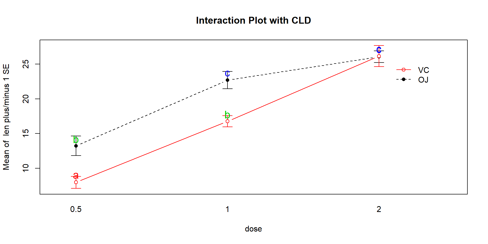
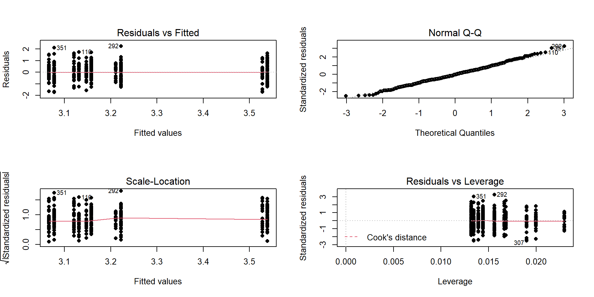
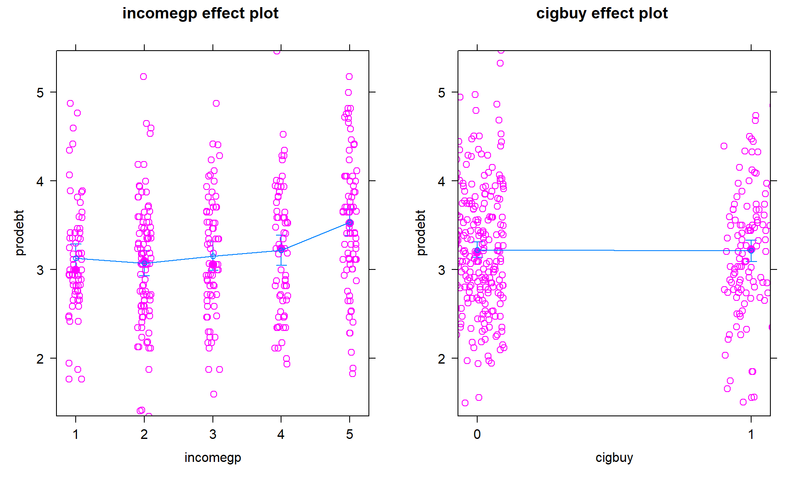
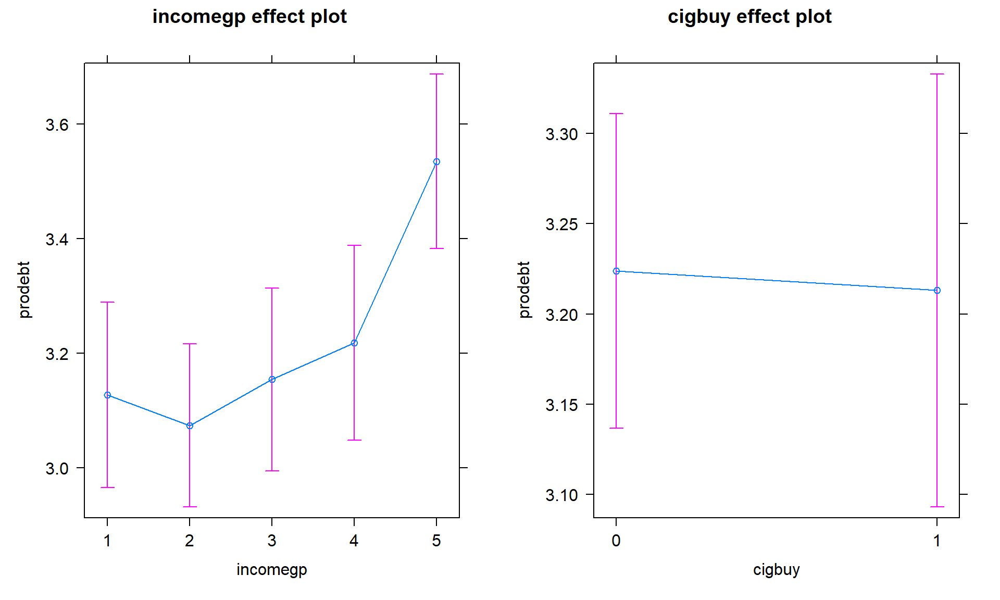

Chapter 4 Two-Way ANOVA
4.1 Situation
In this chapter, we extend the One-Way ANOVA to situations with two factors or categorical explanatory variables in a method that is generally called the Two-Way ANOVA. This allows researchers to simultaneously study two variables that might explain variability in the responses and explore whether the impacts of one explanatory variable change depending on the level of the other explanatory variable. In some situations, each observation is so expensive that researchers want to use a single study to explore two different sets of research questions in the same round of data collection. For example, a company might want to study factors that affect the number of defective products per day and are interested in the impacts of two different types of training programs and three different levels of production quotas. These methods would allow engineers to compare the training programs, production quotas, and see if the training programs “work differently” for different production quotas. In a clinical trials context, it is well known that certain factors can change the performance of certain drugs. For example, different dosages of a drug might have different benefits or side-effects on men, versus women or children or even for different age groups in adults. When the impact of one factor on the response changes depending on the level of another factor, we say that the two explanatory variables interact. It is also possible for both factors to be related to differences in the mean responses and not interact. For example, suppose there is a difference in the response variable means between young and old subjects and a difference in the responses among various dosages, but the effect of increasing the dosage is the same for both young and old subjects. This is an example of what is called an additive type of model. In general, the world is more complicated than the single factor models we considered in Chapter 3 can account for, especially in observational studies, so these models allow us to start to handle more realistic situations.
Consider the following “experiment” where we want to compare the strength of different brands of paper towels when they are wet. The response variable will be the time to failure in seconds (a continuous response variable) when a weight is placed on the towel held at the four corners. We are interested in studying the differences between brands and the impact of different amounts of water applied to the towels.
Predictors (Explanatory Variables): A:
Brand(2 brands of interest, named B1 and B2) and B: Number ofDropsof water (10, 20, 30 drops).Response: Time to failure (in seconds) of a towel (\(y\)) with a weight sitting in the middle of the towel.
4.2 Designing a two-way experiment and visualizing results
Ideally, we want to randomly assign the levels of each factor so that we can attribute causality to any detected effects and to reduce the chances of confounding, where the differences we think are due to one explanatory variable might be due to another variable that varied with the this explanatory variable of interest. Because there are two factors, we would need to design a random assignment scheme to select the levels of both variables. For example, we could randomly select a brand and then randomly select the number of drops to apply from the levels chosen for each measurement. Or we could decide on how many observations we want at each combination of the two factors (ideally having them all equal so the design is balanced) and then randomize the order of applying the different combinations of levels.
Why might it be important to randomly apply the brand and number of drops in an experiment? There are situations where the order of observations can be related to changes in the responses and we want to be able to eliminate the order of observations from being related to the levels of the factors – otherwise the order of observations and levels of the factors would be confounded. For example, suppose that the area where the experiment is being performed becomes wet over time and the later measurements have extra water that gets onto the paper towels and they tend to fail more quickly. If all the observations for the second brand were done later in the study, then the order of observations impacts could make the second brand look worse. If the order of measurements to be made is randomized, then even if there is some drift in the responses over the order of observations it should still be possible to see the differences in the randomly assigned effects. If the study incorporates repeated measurements on human or animal subjects, randomizing the order of treatments they are exposed to can alleviate impacts of them “learning” through the study or changing just due to being studied, something that we would not have to worry about with paper towels.
In observational studies, we do not have the luxury of random assignment, that is, we cannot randomly assign levels of the treatment variables to our subjects, so we cannot guarantee that the only differences between the groups are based on the differences in the explanatory variables. As discussed before, because we can’t control which level of the variables are assigned to the subjects, we cannot make causal inferences and have to worry about other variables being the real drivers of the results. Although we can never establish causal inference with observational studies, we can generalize our results to a larger population if we have a representative (ideally random) sample from our population of interest.
It is also possible that we might have studies where some of the variables are randomly assigned and others that are not randomly assignable. The most common versions of this are what we sometimes call subject “demographics,” such as gender, income, race, etc. We might be performing a study where we can randomly assign treatments to these subjects but might also want to account for differences based on income level, which we can’t assign. In these cases, the scope of inference gets complicated – differences seen on randomized variables can be causally interpreted but you have to be careful to not say that the demographics caused differences. Suppose that a randomly assigned drug dosage is found to show positive differences in older adults and negative changes in younger adults. We could say that the dosage causes the increases in older adults and decreases in younger ones, but we can’t say that age caused the differences in the responses – it just modified how the drug works and what the drug caused to happen in the responses.
Even when we do have random assignment of treatments it is important to think about who/what is included in the sample. To get back to the paper towel example, we are probably interested in more than the sheets of the rolls we have to work with. If we could randomly select the studied paper towels from all paper towels made by each brand, our conclusions could be extended to those populations. That probably would not be practical, but trying to make sure that the towels are representative of all made by each brand by checking for defects and maybe picking towels from a few different rolls would be a good start to being able to extend inferences beyond the tested towels. But if you were doing this study in the factory, it might be possible to randomly sample from the towels produced, at least over the course of a day.
Once random assignment and random sampling is settled, the final aspect of study design involves deciding on the number of observations that should be made. The short (glib) answer is to take as many as you can afford. With more observations comes higher power to detect differences if they exist, which is a desired attribute of all studies. It is also important to make sure that you obtain multiple observations at each combination of the treatment levels, which are called replicates. Having replicate measurements allows estimation of the mean for each combination of the treatment levels as well as estimation and testing for an interaction. And we always prefer80 having balanced designs because they provide resistance to violation of some assumptions as was discussed in Chapter 3. A balanced design in a Two-Way ANOVA setting involves having the same sample size for every combination of the levels of the two factor variables in the model.
With two categorical explanatory variables, there are now five possible scenarios for the truth. Different situations are created depending on whether there is an interaction between the two variables, whether both variables are important but do not interact, or whether either of the variables matter at all. Basically, there are five different possible outcomes in a randomized Two-Way ANOVA study, listed in order of increasing model complexity:
Neither A or B has an effect on the responses (nothing causes differences in responses).
A has an effect, B does not (only A causes differences in responses).
B has an effect, A does not (only B causes differences in responses).
Both A and B have effects on response but no interaction (A and B both cause differences in responses but the impacts are additive).
Effect of A on response differs based on the levels of B, the opposite is also true (means for levels of response across A are different for different levels of B, or, simply, A and B interact in their effect on the response).
To illustrate these five potential outcomes, we will consider a fake version of the paper towel example. It ended up being really messy and complicated to actually perform the experiment as described so these data were simulated. The hope is to use this simple example to illustrate some of the Two-Way ANOVA possibilities. The first step is to understand what has been observed (number observations at each combination of factors) and look at some summary statistics across all the “groups.” The data set is available via the following link:
library(readr)
pt <- read_csv("http://www.math.montana.edu/courses/s217/documents/pt.csv")
pt <- pt %>% mutate(drops = factor(drops),
brand = factor(brand)
)The data set contains five observations per combination of treatment levels as
provided by the tally function. To get counts for combinations of the
variables, use the general formula of tally(x1 ~ x2, data = ...) – noting that the order of x1 and x2 doesn’t matter here:
library(mosaic)
tally(brand ~ drops, data = pt)## drops
## brand 10 20 30
## B1 5 5 5
## B2 5 5 5The sample sizes in each of the six treatment level combinations of Brand
and Drops [(B1, 10), (B1, 20), (B1, 30), (B2, 10), (B2, 20),
(B2, 30)] are \(n_{jk} = 5\) for \(j^{th}\) level of Brand (\(j = 1, 2\)) and
\(k^{th}\) level of Drops (\(k = 1, 2, 3\)). The tally function gives us an \(R\) by \(C\)
contingency table with \(R = 2\) rows (B1, B2) and \(C = 3\) columns
(10, 20, and 30).
We’ll have more fun with \(R\) by \(C\)
tables in Chapter 5 – here it helps us to see the sample size in
each combination of factor levels. The favstats function also helps us
dig into the results for all combinations of factor levels. The notation
involves putting both factor variables after the “~” with a “+” between them.
In the output, the first row contains summary information for the
5 observations for Brand B1 and Drops amount 10. It also contains the
sample size in the n column, although here it rolled into a new set of
rows with the standard deviations of each combination.
favstats(responses ~ brand + drops, data = pt)## brand.drops min Q1 median Q3 max mean sd n missing
## 1 B1.10 0.3892621 1.3158737 1.906436 2.050363 2.333138 1.599015 0.7714970 5 0
## 2 B2.10 2.3078095 2.8556961 3.001147 3.043846 3.050417 2.851783 0.3140764 5 0
## 3 B1.20 0.3838299 0.7737965 1.516424 1.808725 2.105380 1.317631 0.7191978 5 0
## 4 B2.20 1.1415868 1.9382142 2.066681 2.838412 3.001200 2.197219 0.7509989 5 0
## 5 B1.30 0.2387500 0.9804284 1.226804 1.555707 1.829617 1.166261 0.6103657 5 0
## 6 B2.30 0.5470565 1.1205102 1.284117 1.511692 2.106356 1.313946 0.5686485 5 0The next step is to visually explore the results across the combinations
of the two explanatory variables. The pirate-plot can be extended to handle these
sorts of two-way situations using a formula that is something like y ~ A * B.
The x-axis in the pirate-plot shows two rows of labels based on the two categories and the unique combinations of those categories are directly related to a displayed distribution of responses and mean and confidence interval. For example, in Figure 4.1, the Brand with levels of B1 and B2 is the first row of x-axis labels and they are repeated across the three levels of Drops. In reading these plots, look for differences in the means across the levels of the first row variable (Brand) for each level of the second row variable (Drops) and then focus on whether those differences change across the levels of the second variable – that is an interaction as the differences in differences change.
Specifically, start with comparing the two brands at each amount of water.
Do the brands seem different? Certainly for 10 drops of water the two look
different but not for 30 drops, suggesting a different impact of brands based on the amount of water present. We can also look for combinations of factors
that produce the highest or lowest responses in this display. It appears that
the time to failure is highest in the low water drop groups but as the water
levels increase, the time to failure falls and the differences in the two
brands seem to decrease. The fake data seem to have relatively similar
amounts of variability and distribution shapes except for 10 drops and brand B2 – remembering that there are
only 5 observations available for describing the shape of responses for each
combination. These data were simulated using a normal distribution with
constant variance if that gives you some extra confidence in assessing these
model assumptions.
library(yarrr)
set.seed(12)
pirateplot(responses ~ brand * drops, data = pt, xlab = "Drops", ylab = "Time",
inf.method = "ci", inf.disp = "line", theme = 2, point.o = 1) 
Figure 4.1: Pirate-plot of paper towel data by Brand (first row of \(x\)-axis) and Drops (second row of \(x\)-axis).
The pirate-plots can handle situations where both variables have more than two
levels but it can sometimes get a bit cluttered to actually display the data when our analysis is going to focus on means of the responses. The means for each combination
of levels that you can find in the favstats output are more usefully used
in what is called an interaction plot.
Interaction plots display the mean
responses (y-axis) versus levels of one predictor variable on the x-axis,
adding points and separate lines for each level of the other predictor variable. Because
we don’t like any of the available functions in R, we wrote our own function. It is available two ways. The easiest, if it works, is to install and load the catstats R package (M. Greenwood 2021). If you are working on a local RStudio installation, the first step involves installing the remotes (Hester et al. 2021) R package and then loading it – this will allow you to install catstats from our github81 repository (you can type “3” during the installation to avoid updating other packages when you do this step).
# To install the catstats R package (just the first time!):
library(remotes)
remotes::install_github("greenwood-stat/catstats")After that step, you can load catstats like any other R package, using
library(catstats). Some users have experienced issues with getting this
package installed, so you can also download the needed intplot and
intplotarray functions82 using:
source("http://www.math.montana.edu/courses/s217/documents/intplotfunctions_v3.R")The intplot function allows a formula interface like Y ~ X1 * X2 and provides the means \(\pm\) 1 SE (vertical bars) and adds a legend to help make
everything clear.
intplot(responses ~ brand * drops, data = pt)
Figure 4.2: Interaction plot of the paper towel data with Drops on the x-axis and different lines based on Brand.
Interaction plots can always be made two different ways by switching the order
of the variables. Figure 4.2 contains Drops on the x-axis
and Figure 4.3 has Brand on the x-axis. Typically putting
the variable with more levels on the x-axis will make interpretation easier,
but not always. Try both and decide on the one that you like best.
intplot(responses ~ drops * brand, data = pt)
Figure 4.3: Interaction plot of paper towel data with Brand on the x-axis and lines based on Drops.
The formula in this function builds on our previous notation and now we include
both predictor variables with an “*” between them. Using an asterisk between
explanatory variables is one way of telling R to include an interaction between
the variables. While the interaction may or may not be present, the interaction
plot helps us to explore those potential differences.
There are a variety of aspects of the interaction plots to pay attention to. Initially, the question to answer is whether it appears that there is an interaction between the predictor variables. When there is an interaction, you will see non-parallel lines in the interaction plot. You want to look from left to right in the plot and assess whether the lines connecting the means are close to parallel, relative to the amount of variability in the estimated means as represented by the SEs in the bars. If it seems that there is clear visual evidence of non-parallel lines, then the interaction is likely worth considering (we will use a hypothesis test to formally assess this – see the discussion below). If the lines look to be close to parallel, then there probably isn’t an interaction between the variables. Without an interaction present, that means that the differences in the response across levels of one variable doesn’t change based on the levels of the other variable and vice-versa. This means that we can consider the main effects of each variable on their own83. Main effects are much like the results we found in Chapter 3 where we can compare means across levels of a single variable except that there are results for two variables to extract from the model. With the presence of an interaction, it is complicated to summarize how each variable is affecting the response variable because their impacts change depending on the level of the other factor. And plots like the interaction plot provide us with useful information on the pattern of those changes.
If the lines are not parallel, then
focus in on comparing the levels of one variable as the other variable changes.
Remember that the definition of an interaction is that the differences among
levels of one variable depends on the level of the other variable being
considered. “Visually” this means comparing the size of the differences in the
lines from left to right. In Figures 4.2 and 4.3,
the effect of amount of water
changes based on the brand being considered. In Figure 4.3,
the three lines
represent the three water levels. The difference between the brands (left to
right, B1 to B2) is different depending on how much water was present. It
appears that Brand B2 lasted longer at the lower water levels but that the
difference between the two brands dropped as the water levels increased. The
same story appears in Figure 4.2. As the
water levels increase (left to right, 10 to 20 to 30 drops), the differences
between the two brands decrease. Of the two versions, Figure 4.2
is probably easier to read here. Sometimes it is nice to see the interaction plot made both ways simultaneously, so you can also use the intplotarray function, which provides Figure 4.4. This plot also adds pirate-plots to the off-diagonals so you can explore the main effects of each variable, if that is reasonable.
The interaction plots can be used to
identify the best and worst mean responses for combinations of the treatment
levels. For example, 10 Drops and Brand B2 lasts longest, on average, and 30 Drops with Brand B1 fails fastest, on average. In any version of the plot here, the lines do not appear to be parallel suggesting that further exploration of the
interaction appears to be warranted.
intplotarray(responses ~ drops * brand, data = pt)Figure 4.4: Interaction plot array of paper towel data with two different versions of interaction plots and pirate-plots of the responses versus each explanatory variable.
Before we get to the hypothesis tests
to formally make this assessment (you knew some sort of p-value was coming, right?),
we can visualize the 5 different scenarios that could characterize the sorts of
results you could observe in a Two-Way ANOVA situation. Figure 4.5
shows 4 of the 5 scenarios. In panel (a), when there are no differences from either
variable (Scenario 1), it provides relatively parallel lines and basically no
differences either across Drops levels (x-axis) or Brand (lines). Data such as these would
likely result in little to no evidence related to a difference in brands, water
levels, or any interaction between them in this data set.
Figure 4.5: Interaction plots of four possible scenarios in the paper towel study.
Scenario 2 (Figure 4.5 panel (b))
incorporates differences based on factor A (here that is Brand) but no real
difference based on the Drops or any interaction. This results in a clear shift between the lines for the means of the Brands but little to no changes in the level of those lines across water levels.
These lines are relatively parallel. We can see that Brand B2 is better than
Brand B1 but that is all we can show with these sorts of results.
Scenario 3 (Figure 4.5 panel (c)) flips the important variable
to B (Drops)
and shows decreasing average times as the water levels increase. Again, the
interaction panels show near parallel-ness in the lines and really just show differences
among the levels of the water. In both Scenarios 2 and 3, we could use a single
variable and drop the other from the model, getting back to a One-Way ANOVA
model, without losing any important information.
Scenario 4 (Figure 4.5 panel (d)) incorporates
effects of A and B, but they are additive. That means that the effect
of one variable is the same across the levels of the other variable. In this
experiment, that would mean that Drops has the same impact on performance
regardless of brand and that the brands differ but each type of difference is
the same regardless of levels of the other variable.
The interaction plot lines are more or less parallel but now the brands are
clearly different from each other. The plot shows the decrease in performance
based on increasing water levels and that Brand B2 is better than
Brand B1. Additive effects show the same difference in lines from left to
right in the interaction plots.
Finally, Scenario 5 (Figure 4.6) involves
an interaction between the two variables (Drops and Brand). There are many ways
that interactions can present but the main thing is to look for clearly
non-parallel lines.
As noted in the previous discussion, the Drops effect
appears to change depending on which level of Brand is being considered.
Note that the plot here described as Scenario 5 is the same as the initial plot
of the results in Figure 4.2.
Figure 4.6: Interaction plot of Scenario 5 where it appears that an interaction is present.
The typical modeling protocol is to start with assuming that Scenario 5 is a possible description of the results, related to fitting what is called the interaction model, and then attempt to simplify the model (to the additive model) if warranted. We need a hypothesis test to help decide if the interaction is “real.” We start with assuming there is no interaction between the two factors in their impacts on the response and assess evidence against that null hypothesis. We need a hypothesis test because the lines will never be exactly parallel in real data and, just like in the One-Way ANOVA situation, the amount of variation around the lines impacts the ability of the model to detect differences, in this case of an interaction.
4.3 Two-Way ANOVA models and hypothesis tests
To assess interactions with two variables, we need to fully describe models for the additive and interaction scenarios and then develop a method for assessing evidence of the need for different aspects of the models. First, we need to define the notation for these models:
\(y_{ijk}\) is the \(i^{th}\) response from the group for level \(j\) of factor A and level \(k\) of factor B
\(j = 1,\ldots,J\) \(J\) is the number of levels of A
\(k = 1,\ldots,K\) \(K\) is the number of levels of B
\(i = 1,\ldots,n_{jk}\) \(n_{jk}\) is the sample size for level \(j\) of factor A and level \(k\) of factor B
\(N = \Sigma_j\Sigma_k n_{jk}\) is the total sample size (sum of the number of observations across all \(JK\) groups)
We need to extend our previous discussion of reference-coded models to develop a Two-Way ANOVA model. We start with the Two-Way ANOVA interaction model:
\[y_{ijk} = \alpha + \tau_j + \gamma_k + \omega_{jk} + \varepsilon_{ijk},\]
where \(\alpha\) is the baseline group mean (for level 1 of A and level 1 of B), \(\tau_j\) is the deviation for the main effect of A from the baseline for levels \(2,\ldots,J\), \(\gamma_k\) (gamma \(k\)) is the deviation for the main effect of B from the baseline for levels \(2,\ldots,K\), and \(\omega_{jk}\) (omega \(jk\)) is the adjustment for the interaction effect for level \(j\) of factor A and level \(k\) of factor B for \(j = 1,\ldots,J\) and \(k = 1,\ldots,K\). In this model, \(\tau_1\), \(\gamma_1\), and \(\omega_{11}\) are all fixed at 0 because \(\alpha\) is the mean for the combination of the baseline levels of both variables and so no adjustments are needed. Additionally, any \(\omega_{jk}\)’s that contain the baseline category of either factor A or B are also set to 0 and the model for these levels just involves \(\tau_j\) or \(\gamma_k\) added to the intercept. Exploring the R output will help clarify which coefficients are present or set to 0 (so not displayed) in these models. As in Chapter 3, R will typically choose the baseline categories alphabetically but now it is choosing a baseline for both variables and so our detective work will be doubled to sort this out.
If the interaction term is not important, usually based on the interaction test presented below, the \(\omega_{jk}\text{'s}\) can be dropped from the model and we get a model that corresponds to Scenario 4 above. Scenario 4 is where there are two main effects in the model but no interaction between them. The additive Two-Way model is
\[y_{ijk} = \alpha + \tau_j + \gamma_k + \varepsilon_{ijk},\]
where each component is defined as in the interaction model. The difference between the interaction and additive models is setting all the \(\omega_{jk}\text{'s}\) to 0 that are present in the interaction model. When we set parameters to 0 in models it removes them from the model. Setting parameters to 0 is also how we will develop our hypotheses to test for an interaction, by assessing evidence against a null hypothesis that all \(\omega_{jk}\text{'s} = 0\).
The interaction test hypotheses are
\(H_0\): No interaction between A and B on response in population \(\Leftrightarrow\) All \(\omega_{jk}\text{'s} = 0\).
\(H_A\): Interaction between A and B on response in population \(\Leftrightarrow\) At least one \(\omega_{jk}\ne 0\).
To perform this test, a new ANOVA \(F\)-test is required (presented below) but there are also hypotheses relating to the main effects of A (\(\tau_j\text{'s}\)) and B (\(\gamma_k\text{'s}\)). If you decide that there is sufficient evidence against the null hypothesis that no interaction is present to conclude that one is likely present, then it is dangerous to ignore the interaction and test for the main effects because important main effects can be masked by interactions (examples later). It is important to note that, by definition, both variables matter if an interaction is found to be important so the main effect tests may not be very interesting in an interaction model. If the interaction is found to be important based on the test and so is retained in the model, you should focus on the interaction model (also called the full model) in order to understand and describe the form of the interaction among the variables.
If the interaction test does not return a small p-value and you decide that you do not have enough evidence against the null hypothesis to suggest that the interaction is needed, the interaction can be dropped from the model. In this situation, we would re-fit the model and focus on the results provided by the additive model – performing tests for the two additive main effects. For the first, but not last time, we encounter a model with more than one variable and more than one test of potential interest. In models with multiple variables at similar levels (here both are main effects), we are interested in the results for each variable given that the other variable is in the model. In many situations, including more than one variable in a model changes the results for the other variable even if those variables do not interact. The reason for this is more clear in Chapter 8 and really only matters here if we have unbalanced designs, but we need to start adding a short modifier to our discussions of main effects – they are the results conditional on or adjusting for or, simply, given, the other variable(s) in the model. Specifically, the hypotheses for the two main effects are:
Main effect test for A:
\(H_0\): No differences in means across levels of A in population, given B in the model
\(\Leftrightarrow\) All \(\tau_j\text{'s} = 0\) in additive model.
\(H_A\): Some difference in means across levels A in population, given B in the model
\(\Leftrightarrow\) At least one \(\tau_j \ne 0\), in additive model.
Main effect test for B:
\(H_0\): No differences in means across levels of B in population, given A in the model
\(\Leftrightarrow\) All \(\gamma_k\text{'s} = 0\) in additive model.
\(H_A\): Some difference in means across levels B in population, given A in the model
\(\Leftrightarrow\) At least one \(\gamma_k \ne 0\), in additive model.
In order to test these effects (interaction in the interaction model and main effects in the additive model), \(F\)-tests are developed using Sums of Squares, Mean Squares, and degrees of freedom similar to those in Chapter 3. We won’t worry about the details of the sums of squares formulas but you should remember the sums of squares decomposition, which still applies84. Table 4.1 summarizes the ANOVA results you will obtain for the interaction model and Table 4.2 provides the similar general results for the additive model. As we saw in Chapter 3, the degrees of freedom are the amount of information that is free to vary at a particular level and that rule generally holds here. For example, for factor A with \(J\) levels, there are \(J-1\) parameters that are free since the baseline is fixed. The residual degrees of freedom for both models are not as easily explained but have a simple formula. Note that the sum of the degrees of freedom from the main effects, (interaction if present), and error need to equal \(N-1\), just like in the One-Way ANOVA table.
| Source | DF | SS | MS | F-statistics |
|---|---|---|---|---|
| A | \(J-1\) | \(\text{SS}_A\) | \(\text{MS}_A = \text{SS}_A/\text{df}_A\) | \(\text{MS}_A/\text{MS}_E\) |
| B | \(K-1\) | \(\text{SS}_B\) | \(\text{MS}_B = \text{SS}_B/\text{df}_B\) | \(\text{MS}_B/\text{MS}_E\) |
| A:B (interaction) | \((J-1)(K-1)\) | \(\text{SS}_{AB}\) | \(\text{MS}_{AB} = \text{SS}_{AB}/\text{df}_{AB}\) | \(\text{MS}_{AB}/\text{MS}_E\) |
| Error | \(N-JK\) | \(\text{SS}_E\) | \(\text{MS}_E = \text{SS}_E/\text{df}_E\) | |
| Total | \(\color{red}{\mathbf{N-1}}\) | \(\color{red}{\textbf{SS}_{\textbf{Total}}}\) |
| Source | DF | SS | MS | F-statistics |
|---|---|---|---|---|
| A | \(J-1\) | \(\text{SS}_A\) | \(\text{MS}_A = \text{SS}_A/\text{df}_A\) | \(\text{MS}_A/\text{MS}_E\) |
| B | \(K-1\) | \(\text{SS}_B\) | \(\text{MS}_B = \text{SS}_B/\text{df}_B\) | \(\text{MS}_B/\text{MS}_E\) |
| Error | \(N-J-K+1\) | \(\text{SS}_E\) | \(\text{MS}_E = \text{SS}_E/\text{df}_E\) | |
| Total | \(\color{red}{\mathbf{N-1}}\) | \(\color{red}{\textbf{SS}_{\textbf{Total}}}\) |
The mean squares are formed by taking the sums of squares (we’ll let R find those
for us) and dividing by the \(df\) in the row.
The \(F\)-ratios are found by taking
the mean squares from the row and dividing by the mean squared error (\(\text{MS}_E\)).
They follow \(F\)-distributions with numerator degrees
of freedom from the row and denominator degrees of freedom from the Error row
(in R output this the Residuals row).
It is possible to develop permutation
tests for these methods but some
technical issues arise in doing permutation tests for interaction model components
so we will not use them here. This means we will have to place even more
emphasis on the data not presenting clear violations of assumptions since we only have the parametric method
available.
With some basic expectations about the ANOVA tables and \(F\)-statistic construction
in mind, we can get to actually estimating the models and exploring the results.
The first example involves the fake paper towel data
displayed in Figure 4.1 and 4.2. It appeared
that Scenario 5 was the correct
story since the lines appeared to be non-parallel, but we need to know whether there is
sufficient evidence to suggest that the interaction is “real” and we get that through the
interaction hypothesis test. To fit the interaction model using lm,
the general formulation is lm(y ~ x1 * x2, data = ...). The
order of the variables doesn’t matter as the most important part of the model,
to start with, relates to the interaction of the variables.
The ANOVA table output
shows the results for the interaction model obtained by running the anova
function on the model called m1.
Specifically, the test that
\(H_0: \text{ All } \omega_{jk}\text{'s} = 0\) has a
test statistic of \(F(2,24) = 1.92\) (in the output from the row with
brands:drops) and a p-value of 0.17. So there is weak evidence against the null hypothesis of no interaction, with a 17% chance we would
observe a difference in the \(\omega_{jk}\text{'s}\) like we did or more
extreme if the \(\omega_{jk}\text{'s}\) really were all 0. So we would conclude that the interaction is probably not needed85. Note that for the interaction
model components, R presents them with a colon, :, between the variable
names.
m1 <- lm(responses ~ brand * drops, data = pt)
anova(m1)## Analysis of Variance Table
##
## Response: responses
## Df Sum Sq Mean Sq F value Pr(>F)
## brand 1 4.3322 4.3322 10.5192 0.003458
## drops 2 4.8581 2.4290 5.8981 0.008251
## brand:drops 2 1.5801 0.7901 1.9184 0.168695
## Residuals 24 9.8840 0.4118It is useful to display the estimates from this model and we can utilize
plot(allEffects(MODELNAME)) to visualize the results for the terms
in our models. If we turn on the options for grid = T, multiline = T,
and ci.style = "bars" we get a useful version of the basic
“effect plot” for Two-Way ANOVA
models with interaction. I also added lty = c(1:2) to change the line type for the two lines (replace 2 with the number of levels in the variable driving the different lines. The results of the estimated interaction model are
displayed in Figure 4.7, which looks very similar to our
previous interaction plot. The only difference is that this comes from model
that assumes equal variance and these plots show 95% confidence intervals
for the means instead of the \(\pm\) 1 SE used in the intplot where each SE is calculated using the variance of the observations at each combination of levels. Note that other than the lines connecting the means, this plot also is similar to the pirate-plot in Figure 4.1 that also displayed the original responses for each of the six combinations of the two explanatory variables. That plot then provides a place to assess assumptions of the equal variance and distributions for each group as well as explore differences in the group means.
library(effects)
plot(allEffects(m1), grid = T, multiline = T, lty = c(1:2), ci.style = "bars")Figure 4.7: Plot of estimated results of interaction model for the paper towel performance data.
In the absence of sufficient evidence to include the
interaction, the model should be simplified to the additive model and the interpretation
focused on each main effect, conditional on having the other variable in the
model. To fit an additive model and not include an interaction, the model
formula involves a “+” instead of a “*” between the explanatory variables.
m2 <- lm(responses ~ brand + drops, data = pt)
anova(m2)## Analysis of Variance Table
##
## Response: responses
## Df Sum Sq Mean Sq F value Pr(>F)
## brand 1 4.3322 4.3322 9.8251 0.004236
## drops 2 4.8581 2.4290 5.5089 0.010123
## Residuals 26 11.4641 0.4409The p-values for the main effects of brand and drops change slightly from the
results in the interaction model due to changes in the \(\text{MS}_E\) from
0.4118 to 0.4409 (more variability is left over in the simpler model) and the
\(\text{DF}_{\text{error}}\) that increases from 24 to 26. In both models, the
\(\text{SS}_{\text{Total}}\) is the same (20.6544). In the interaction model,
\[\begin{array}{rl} \text{SS}_{\text{Total}} & = \text{SS}_{\text{brand}} + \text{SS}_{\text{drops}} + \text{SS}_{\text{brand:drops}} + \text{SS}_{\text{E}}\\ & = 4.3322 + 4.8581 + 1.5801 + 9.8840\\ & = 20.6544.\\ \end{array}\]
In the additive model, the variability that was attributed to the interaction term in the interaction model (\(\text{SS}_{\text{brand:drops}} = 1.5801\)) is pushed into the \(\text{SS}_{\text{E}}\), which increases from 9.884 to 11.4641. The sums of squares decomposition in the additive model is
\[\begin{array}{rl} \text{SS}_{\text{Total}} & = \text{SS}_{\text{brand}} + \text{SS}_{\text{drops}} + \text{SS}_{\text{E}} \\ & = 4.3322 + 4.8581 + 11.4641 \\ & = 20.6544. \\ \end{array}\]
This shows that the sums of squares decomposition applies in these more complicated models as it did in the One-Way ANOVA. It also shows that if the interaction is removed from the model, that variability is lumped in with the other unexplained variability that goes in the \(\text{SS}_{\text{E}}\) in any model.
The fact that the sums of squares decomposition can be applied here is
useful, except that there is a small issue
with the main effect tests in the ANOVA table results that follow this
decomposition when the design is not balanced. It ends up that the tests in a
typical ANOVA table are only conditional on the tests higher up in the table. For
example, in the additive model ANOVA table, the Brand test is not
conditional on the Drops effect, but the Drops effect is conditional on the
Brand effect. In balanced designs, conditioning on the other variable does not change the results but in unbalanced designs, the order does matter. To get both results to be similarly conditional on the other variable, we have to use another type of sums of
squares, called Type II sums of squares.
These sums of squares will no longer always
follow the rules of the sums of squares decomposition but they
will test the desired hypotheses. Specifically, they provide each test
conditional on any other terms at the same level of the model and match the
hypotheses written out earlier in this section. To get the “correct” ANOVA
results, the car package (Fox, Weisberg, and Price (2021), Fox and Weisberg (2011)) is required. We use the
Anova function on our linear models from here forward to get the “right”
tests in our ANOVA tables86.
Note how the case-sensitive nature of R code shows
up in the use of the capital “A” Anova function instead of the lower-case “a” anova
function used previously. In this situation, because the design was balanced, the
results are the same using either function. Observational studies rarely
generate balanced designs (some designed studies can result in unbalanced
designs too) so we will generally just use the Type II version of the sums of
squares to give us the desired results across different data sets we might analyze. The Anova results using the Type II sums of
squares are slightly more conservative than the results from anova,
which are called Type I sums of squares.
The sums of squares decomposition no
longer applies, but it is a small sacrifice to get each test after
adjusting for all other variables87.
library(car)
Anova(m2)## Anova Table (Type II tests)
##
## Response: responses
## Sum Sq Df F value Pr(>F)
## brand 4.3322 1 9.8251 0.004236
## drops 4.8581 2 5.5089 0.010123
## Residuals 11.4641 26The new output switches the columns around and doesn’t show you the mean squares, but gives the most critical parts of the output. Here, there is no change in results because it is a balanced design with equal counts of responses in each combination of the two explanatory variables.
The additive model, when appropriate, provides simpler interpretations for each explanatory variable compared to models with interactions because the effect of one variable is the same regardless of the levels of the other variable and vice versa. There are two tools to aid in understanding the impacts of the two variables in the additive model. First, the model summary provides estimated coefficients with interpretations like those seen in Chapter 3 (deviation of group \(j\) or \(k\) from the baseline group’s mean), except with the additional wording of “controlling for” the other variable added to any of the discussion. Second, the term-plots now show each main effect and how the groups differ with one panel for each of the two explanatory variables in the model. These term-plots are created by holding the other variable constant at one of its levels (the most frequently occurring or first if the there are multiple groups tied for being most frequent) and presenting the estimated means across the levels of the variable in the plot.
summary(m2)##
## Call:
## lm(formula = responses ~ brand + drops, data = pt)
##
## Residuals:
## Min 1Q Median 3Q Max
## -1.4561 -0.4587 0.1297 0.4434 0.9695
##
## Coefficients:
## Estimate Std. Error t value Pr(>|t|)
## (Intercept) 1.8454 0.2425 7.611 4.45e-08
## brandB2 0.7600 0.2425 3.134 0.00424
## drops20 -0.4680 0.2970 -1.576 0.12715
## drops30 -0.9853 0.2970 -3.318 0.00269
##
## Residual standard error: 0.664 on 26 degrees of freedom
## Multiple R-squared: 0.445, Adjusted R-squared: 0.3809
## F-statistic: 6.948 on 3 and 26 DF, p-value: 0.001381In the model summary, the baseline combination estimated in the (Intercept)
row is for Brand B1 and Drops 10 and estimates the mean failure
time as 1.85 seconds for this combination. As
before, the group labels that do not show up are the baseline but there are two
variables’ baselines to identify. Now the “simple” aspects of the additive
model show up. The interpretation of the Brands B2 coefficient is as
a deviation from the baseline but it applies regardless of the level of
Drops. Any difference between B1 and B2 involves a shift up of 0.76 seconds
in the estimated mean failure time. Similarly, going from 10 (baseline) to 20
drops results in a drop in the estimated failure mean of 0.47 seconds and going
from 10 to 30 drops results in a drop of almost 1 second in the average time to
failure, both estimated changes are the same regardless of the brand of paper
towel being considered. Sometimes, especially in observational studies, we use
the terminology “controlled for” to remind the reader that the other variable
was present in the model88 and also explained some of the variability in the
responses. The term-plots for
the additive model (Figure 4.8) help us visualize the
impacts of changes brand and changing water levels, holding the other
variable constant. The differences in heights in each panel correspond
to the coefficients just discussed.
library(effects)
plot(allEffects(m2))Figure 4.8: Term-plots of additive model for paper towel data. Left panel displays results for two brands and right panel for number of drops of water, each after controlling for the other.
With the first additive model we have considered, it is now the first time where we are working with a model where we can’t display the observations together with the means that the model is producing because the results for each predictor are averaged across the levels of the other predictor. To visualize some aspects of the original observations with the estimates from each group, we can turn on an option in the term-plots (residuals = T) to obtain the partial residuals that show the residuals as a function of one variable after adjusting for the effects/impacts of other variables. We will avoid the specifics of the calculations for now, but you can use these to explore the residuals at different levels of each predictor. They will be most useful in the Chapters 7 and 8 but give us some insights in unexplained variation in each level of the predictors once we remove the impacts of other predictors in the model. Use plots like Figure 4.9 to look for different variability at different levels of the predictors and locations of possible outliers in these models. Note that the points (open circles) are jittered to aid in seeing all of them, the means of each group of residuals are indicated by a filled large circle, and the smaller circles in the center of the bars for the 95% confidence intervals are the means from the model. Term-plots with partial residuals accompany our regular diagnostic plots for assessing equal variance assumptions in these models – in some cases adding the residuals will clutter the term-plots so much that reporting them is not useful since one of the main purposes of the term-plots is to visualize the model estimates. So use the residuals = T option judiciously.
library(effects)
plot(allEffects(m2, residuals = T))
Figure 4.9: Term-plots of additive model for paper towel data with partial residuals added. Relatively similar variability seems to be present in each of the groups of residuals after adjusting for the other variable except for the residuals for the 10 drops where the variability is smaller, especially if one small outlier is ignored.
For the One-Way and Two-Way interaction models, the partial residuals are just the original observations so present similar information as the pirate-plots but do show the model estimated 95% confidence intervals. With interaction models, you can use the default settings in effects when adding in the partial residuals as seen below in Figure 4.12.
4.4 Guinea pig tooth growth analysis with Two-Way ANOVA
The effects of dosage and delivery method of ascorbic acid on Guinea Pig odontoblast growth was analyzed as a One-Way ANOVA in Section 3.5 by assessing evidence of any difference in the means of any of the six combinations of dosage method (Vit C capsule vs Orange Juice) and three dosage amounts (0.5, 1, and 2 mg/day). Now we will consider the dosage and delivery methods as two separate variables and explore their potential interaction. A pirate-plot and interaction plot are provided in Figure 4.10.
Figure 4.10: Pirate-plot and interaction plot of the odontoblast growth data set.
data(ToothGrowth)
library(tibble)
ToothGrowth <- as_tibble(ToothGrowth)par(mfrow = c(1,2))
pirateplot(len ~ supp * dose, data = ToothGrowth, ylim = c(0,35),
main = "Pirate-plot", xlab = "Dosage", ylab = "Odontoblast Growth",
inf.method = "ci", inf.disp = "line", theme = 2)
intplot(len ~ supp * dose, data = ToothGrowth, col = c(1,2),
main = "Interaction Plot", ylim = c(0,35))It appears that the effect of method changes based on the dosage as the interaction plot seems to show some evidence of non-parallel lines. Actually, it appears that the effect of delivery method is the same (parallel lines) for doses 0.5 and 1.0 mg/day but that the effect of delivery method changes for 2 mg/day.
We can use the ANOVA \(F\)-test for an interaction to assess whether we think the interaction is “real” relative to the variability in the responses. That is, is it larger than we would expect due to natural variation in the data? If yes, then we think it is a real effect and we should account for it. The following code fits the interaction model and provides an ANOVA table.
TG1 <- lm(len ~ supp * dose, data = ToothGrowth)
Anova(TG1)## Anova Table (Type II tests)
##
## Response: len
## Sum Sq Df F value Pr(>F)
## supp 205.35 1 12.3170 0.0008936
## dose 2224.30 1 133.4151 < 2.2e-16
## supp:dose 88.92 1 5.3335 0.0246314
## Residuals 933.63 56The R output is reporting an interaction test result of \(F(1,56) = 5.3\) with
a p-value of 0.025. But this should raise a red flag since the numerator
degrees of freedom are not what we should expect based on Table 4.1 of \((K-1)*(J-1) = (2-1)*(3-1) = 2\).
This brings up an issue in R when working
with categorical variables. If the levels of a categorical variable are entered
numerically, R will treat them as quantitative variables and not split out the
different levels of the categorical variable. To make sure that R treats
categorical variables the correct way, we should use the factor
function on any variables89 that are categorical in meaning but are coded numerically in the data set. The following code creates a new variable called dosef
using mutate and the factor function to help us obtain correct results from the linear
model.
The re-run of the ANOVA table provides the correct analysis and the
expected \(df\) for the two rows of output involving dosef:
ToothGrowth <- ToothGrowth %>% mutate(dosef = factor(dose))
TG2 <- lm(len ~ supp * dosef, data = ToothGrowth)
Anova(TG2)## Anova Table (Type II tests)
##
## Response: len
## Sum Sq Df F value Pr(>F)
## supp 205.35 1 15.572 0.0002312
## dosef 2426.43 2 92.000 < 2.2e-16
## supp:dosef 108.32 2 4.107 0.0218603
## Residuals 712.11 54The ANOVA \(F\)-test for an interaction between supplement type and dosage level is \(F(2,54) = 4.107\) with a p-value of 0.022. So there is moderate to strong evidence against the null hypothesis of no interaction between Dosage and Delivery method, so we would likely conclude that there is an interaction present that we should discuss and this supports a changing effect on odontoblast growth of dosage based on the delivery method in these guinea pigs.
Any similarities between this correct result and the previous WRONG result are coincidence. I once attended a Master’s thesis defense where the results from a similar model were not as expected (small p-values in places they didn’t expect and large p-values in places where they thought differences existed based on past results and plots of the data). During the presentation, the student showed some ANOVA tables and the four level categorical variable had 1 numerator \(df\) in all ANOVA tables. The student passed with major revisions but had to re-run all the results and re-write all the conclusions… So be careful to check the ANOVA results (\(df\) and for the right number of expected model coefficients) to make sure they match your expectations. This is one reason why you will be learning to fill in ANOVA tables based on information about the study so that you can be prepared to detect when your code has let you down90. It is also a great reason to explore term-plots and coefficient interpretations as that can also help diagnose errors in model construction.
Getting back to the previous results, we now have enough background information to more formally write up a focused interpretation of these results. The 6+ hypothesis testing steps in this situation would be focused on first identifying that the best analysis here is as a Two-Way ANOVA situation (these data were analyzed in Chapter 3 as a One-Way ANOVA but this version is likely better because it can explore whether there is an interaction between delivery method and dosage). We will focus on assessing the interaction. If the interaction had been dropped, we would have reported the test results for the interaction, then re-fit the additive model and used it to explore the main effect tests and estimates for Dose and Delivery method. But since we are inclined to retain the interaction component in the model, the steps focus on the interaction.
par(mfrow = c(2,2))
plot(TG2, pch = 16) Figure 4.11: Diagnostic plots for the interaction model for odontoblast growth interaction model.
The RQ is whether there is an interaction of dosage and delivery method on odontoblast growth. Data were collected at all combinations of these predictor variables on the size of the cells, so they can address the size of the cells in these condition combinations. The interaction \(F\)-test will be used to assess the research question.
Hypotheses:
\(H_0\): No interaction between Delivery method and Dose on odontoblast growth in population of guinea pigs
\(\Leftrightarrow\) All \(\omega_{jk}\text{'s} = 0\).
\(H_A\): Interaction between Delivery method and Dose on odontoblast growth in population of guinea pigs
\(\Leftrightarrow\) At least one \(\omega_{jk}\ne 0\).
Plot the data and assess validity conditions:
Independence:
- There is no indication of an issue with this assumption because we don’t know of a reason why the independence of the measurements of odontoblast growth of across the guinea pigs as studied might be violated.
Constant variance:
To assess this assumption, we can use the pirate-plot in Figure 4.10, the diagnostic plots in Figure 4.11, and by adding the partial residuals to the term-plot91 as shown in 4.12.
In the Residuals vs Fitted and the Scale-Location plots, the differences in variability among the groups (see the different x-axis positions for each group’s fitted values) is minor, so there is not strong evidence of a problem with the equal variance assumption. Similarly, the original pirate-plots and adding the partial residuals to the term-plot do not highlight big differences in variability at any of the combinations of the predictors, so do not suggest clear issues with this assumption.
plot(allEffects(TG2, residuals = T, x.var = "dosef"))Figure 4.12: Term-plot for odontoblast growth interaction model with partial residuals added.
Normality of residuals:
- The QQ-Plot in Figure 4.11 does not suggest a problem with this assumption.
Note that these diagnostics and conclusions are the same as in Section 3.5 because the interaction model and the One-Way ANOVA model with all six combinations of the levels of the two variables fit exactly the same. But the RQ that we can address differs due to the different model parameterizations.
Calculate the test statistic and p-value for the interaction test.
TG2 <- lm(len ~ supp * dosef, data = ToothGrowth) Anova(TG2)## Anova Table (Type II tests) ## ## Response: len ## Sum Sq Df F value Pr(>F) ## supp 205.35 1 15.572 0.0002312 ## dosef 2426.43 2 92.000 < 2.2e-16 ## supp:dosef 108.32 2 4.107 0.0218603 ## Residuals 712.11 54The test statistic is \(F(2,54) = 4.107\) with a p-value of 0.0219
To find this p-value directly in R from the test statistic value and \(F\)-distribution, we can use the
pffunction.
pf(4.107, df1 = 2, df2 = 54, lower.tail = F)## [1] 0.0218601
Conclusion based on p-value:
- With a p-value of 0.0219 (from \(F(2,54) = 4.107\)), there is about a 2.19% chance we would observe an interaction like we did (or more extreme) if none were truly present. This provides moderate to strong evidence against the null hypothesis of no interaction between delivery method and dosage on odontoblast growth in the population so we would conclude that there is likely an interaction and would retain the interaction in the model.
Size of differences:
- See discussion below.
Scope of Inference:
- Based on the random assignment of treatment levels, causal inference is possible (the changes due to dosage in the differences based on supplement type caused the differences in growth) but because the guinea pigs were not randomly selected, the inferences only pertain to these guinea pigs.
In a Two-Way ANOVA, we need to go a little further to get to the final “size” interpretations since the models are more complicated. When there is an interaction present, we should focus on the term-plot of the interaction model for an interpretation of the form and pattern of the interaction. If the interaction were unimportant, then the hypotheses and results should focus on the additive model results, especially the estimated model coefficients. To see why we don’t usually discuss all the estimated model coefficients in an interaction model, the six coefficients for this model are provided:
summary(TG2)$coefficients## Estimate Std. Error t value Pr(>|t|)
## (Intercept) 13.23 1.148353 11.5208468 3.602548e-16
## suppVC -5.25 1.624017 -3.2327258 2.092470e-03
## dosef1 9.47 1.624017 5.8312215 3.175641e-07
## dosef2 12.83 1.624017 7.9001660 1.429712e-10
## suppVC:dosef1 -0.68 2.296706 -0.2960762 7.683076e-01
## suppVC:dosef2 5.33 2.296706 2.3207148 2.410826e-02There are two \(\widehat{\omega}_{jk}\text{'s}\) in the results, related to modifying the estimates for doses of 1 (-0.68) and 2 (5.33) for the Vitamin C group. If you want to re-construct the fitted values from the model that are displayed in Figure 4.13, you have to look for any coefficients that are “turned on” for a combination of levels of interest. For example, for the OJ group (solid line), the dosage of 0.5 mg/day has an estimate of an average growth of approximately 13 mm. This is the baseline group, so the model estimate for an observation in the OJ and 0.5 mg/day dosage is simply \(\widehat{y}_{i,\text{OJ},0.5mg} = \widehat{\alpha} = 13.23\) microns. For the OJ and 2 mg/day dosage estimate that has a value over 25 microns in the plot, the model incorporates the deviation for the 2 mg/day dosage: \(\widehat{y}_{i,\text{OJ},2mg} = \widehat{\alpha} + \widehat{\tau}_{2mg} = 13.23 + 12.83 = 26.06\) microns. For the Vitamin C group, another coefficient becomes involved from its “main effect.” For the VC and 0.5 mg dosage level, the estimate is approximately 8 microns. The pertinent model components are \(\widehat{y}_{i,\text{VC},0.5mg} = \widehat{\alpha} + \widehat{\gamma}_{\text{VC}} = 13.23 + (-5.25) = 7.98\) microns. Finally, when we consider non-baseline results for both groups, three coefficients are required to reconstruct the results in the plot. For example, the estimate for the VC, 1 mg dosage is \(\widehat{y}_{i,\text{VC},1mg} = \widehat{\alpha} + \widehat{\tau}_{1mg} + \widehat{\gamma}_{\text{VC}} + \widehat{\omega}_{\text{VC},1mg} = 13.23 + 9.47 + (-5.25) +(-0.68) = 16.77\) microns. We usually will by-pass all this fun(!) with the coefficients in an interaction model and go from the ANOVA interaction test to focusing on the pattern of the responses in the interaction plot or going to the simpler additive model, but it is good to know that there are still model coefficients driving our results even if there are too many to be easily interpreted.
Figure 4.13: Term-plot for the estimated interaction for the Odontoblast Growth data using the multiline = T and ci.style = "bars" options.
Figure 4.14: Interaction plot for Odontoblast data with added CLD from Tukey’s HSD.
plot(allEffects(TG2), grid = T, multiline = T, lty = c(1:2), ci.style = "bars")Given the presence of an important
interaction, then the final step in the interpretation here is to interpret the
results in the interaction plot or term-plot of the interaction model,
supported by the p-value suggesting a different effect of
supplement type based on the dosage level. To supplement this even more,
knowing which combinations of levels differ can enhance our discussion. Tukey’s
HSD results (specifically the CLD) can be added to the original interaction
plot by turning on the cld = T option in the intplot function as seen in
Figure 4.14. Sometimes it is hard to see the letters and so
there is also a cldshift = ... option to move the letters up or down; here a
value of 1 seemed to work.
intplot(len ~ supp * dose, data = ToothGrowth, col = c(1,2), cldshift = 1,
cld = T, main = "Interaction Plot with CLD")The “size” interpretation of the previous hypothesis test result could be something like the following: Generally increasing the dosage increases the mean growth except for the 2 mg/day dosage level where the increase levels off in the OJ group (OJ 1 and 2 mg/day are not detectably different) and the differences between the two delivery methods disappear at the highest dosage level. But for 0.5 and 1 mg/day dosages, OJ is clearly better than VC by about 10 microns of growth on average.
4.5 Observational study example: The Psychology of Debt
In this section, the analysis of a survey of \(N = 464\) randomly sampled
adults will be analyzed from a survey conducted by Lea, Webley, and Walker (1995)
and available in the debt data set from the faraway package
(Faraway 2016).
The subjects responded to a variety of questions
including whether they buy cigarettes (cigbuy: 0 if
no, 1 if yes), their housing situation (house: 1 = rent, 2 = mortgage,
and 3 = owned outright), their income group (incomegp: 1 =
lowest, 5 = highest), and their score on a continuous scale of attitudes about
debt (prodebt: 1 = least favorable, 6 = most favorable). The variable prodebt
was derived as the average of a series of questions about debt with each
question measured on an ordinal 1 to 6 scale, with higher values
corresponding to more positive responses about \(\underline{\text{going into debt}}\)
of various kinds. The ordered scale on surveys that try to elicit your opinions on
topics with scales from 1 to 5, 1 to 6, 1 to 7 or even, sometimes, 1 to 10 is called
a Likert scale (Likert 1932). It is not a quantitative scale and really
should be handled more carefully than taking an average of a set responses as was done here. That
said, it is extremely common practice in social science research to treat ordinal
responses as if they are quantitative and take the average of many of them to
create a more continuous response variable like the one we are using here. If
you continue your statistics explorations, you will see some better techniques
for analyzing ordinal responses. That said, the scale of the
response is relatively easy to understand as an amount of willingness to go
into debt on a scale from 1 to 6 with higher values corresponding to more
willingness to be in debt.
These data are typical of survey data where respondents were not required
to answer all questions and there are some
missing responses. We could clean out any individuals that failed to respond to
all questions (called “complete cases”) using the drop_na function, which will return responses only for subjects
that responded to every question in
the data set, debt. The change in sample size is available by running the dim function on the two data sets – there were \(464\) observations (rows) initially along with \(13\) variables (columns) and once observations with any missing values were dropped there are \(N = 304\) for us to analyze. Losing 35% of the observations is a pretty noticeable loss.
library(faraway)
data(debt)
library(tibble)
debt <- as_tibble(debt) %>% mutate(incomegp = factor(incomegp),
cigbuy = factor(cigbuy)
)
debtc <- debt %>% drop_na()
dim(debt)## [1] 464 13dim(debtc)## [1] 304 13Using drop_na() with a list a variable names, we can focus on the three variables we are using in this model and whether the responses are missing on them, only cleaning out rows that are missing on incomegp, cigbuy, and/or prodebt92. The missingness is less dramatic, retaining \(N = 388\) observations in debtRc for our analysis using these three variables.
# Remove rows with missing values based on just three variables.
debtRc <- debt %>% drop_na(incomegp, cigbuy, prodebt)
dim(debtRc)## [1] 388 13The second approach seems better as it drops fewer observations so we will use that below. But suppose that people did not want to
provide their income levels if they were in the lowest or highest
income groups and that is why they are missing. Then we would be missing responses systematically and conclusions
could be biased because of ignoring particular types of subjects. We don’t have particular statistical tools to easily handle this problem but every researcher should worry about non-response when selected subjects do not respond at
all or fail to answer some questions. When the missing values are systematic in some fashion and not just missing randomly (missing randomly might be thought of as caused by “demonic intrusion” (Hurlbert 1984) that can’t be easily explained or related to the types of responses), then we worry about non-response bias that is systematically biasing our results because of the missing responses. This also ties back into our discussion of who was sampled. We need to
think carefully about who was part of the sample but refused to participate and
how that might impact our inferences. And whether we can even address the research question of interest based on what was measured given those that refused/failed to respond. For example, suppose we are studying river flows and are interested in the height of a river. Missingness in these responses could arise because a battery fails or the data logger “crashes” (not related to the responses and so not definitely problematic) or because of something about the measurements to be taken that causes the missingness (suppose the gage can only can measure between one and three feet deep and the river is running at four feet deep during a flood or below 1 foot during a drought). The first machine failures are very different from the height-based missing responses; the height-based missingness clearly leads to bias in estimating mean river height because of what can not be observed. In Chapter 5, we introduce the tableplot as another tool to visualize data that can also show missing data patterns to help you think about these sorts of issues further93. If you delete observations and the missing data are not random/non-systematic, your scope of inference is restricted to just those subjects that provided responses and were analyzed. If the missingness is random and not related to aspects of the measurements taken, then some missingness can be tolerated and still retain some comfort that inferences can be extended to the population a random sample of subjects was taken from.
Ignoring this potential for bias in the
results for the moment, we are first interested in whether buying
cigarettes/not and income groups interact in their explanation of the
respondent’s mean opinions on being in debt. The interaction plot
(Figure 4.15) may suggest an interaction between cigbuy
and incomegp where the lines cross, switching which of the cigbuy levels is higher (income levels 2, 3, and 5) or even almost not different (income levels 1 and 4). But it is
not as clear as the previous examples, especially with how large the SEs are relative the variation in the means. The interaction \(F\)-test helps us
objectively assess evidence against the null hypothesis of no interaction. Based on the plot, there do
not appear to be differences based on cigarette purchasing but there might be some
differences between the income groups if we drop the interaction from the model. If we drop the interaction, then
this suggests that we might be in Scenario 2 or 3 where a single main effect of
interest is present.
intplotarray(prodebt ~ cigbuy * incomegp, data = debtRc, col = c(1,3,4,5,6), lwd = 2)
Figure 4.15: Interaction plot array of prodebt by income group (1 to 5) and whether they buy cigarettes (0 = no, 1 = yes).
As in other situations, and especially with observational studies where a single large sample is collected and then the levels of the factor variables are observed, it is important to check for balance – whether all the combinations of the two predictor variables are similarly represented. Even more critically, we need to check whether all the combinations of levels of factors are measured. If a combination is not measured, then we lose the ability to estimate the mean for that combination and the ability to test for an interaction. A solution to that problem would be to collapse the categories of one of the variables, changing the definitions of the levels but if you fail to obtain information for all combinations, you can’t work with the interaction model. In this situation, we barely have enough information to proceed (the smallest \(n_{jk}\) is 13 for income group 4 that buys cigarettes). We have a very unbalanced design with counts between 13 and 60 in the different combinations, so lose some resistance to violation of assumptions but can proceed to explore the model with a critical eye on how the diagnostic plots look.
tally(cigbuy ~ incomegp, data = debtRc)## incomegp
## cigbuy 1 2 3 4 5
## 0 36 49 54 53 60
## 1 37 45 20 13 21The test for the interaction is always how we start our modeling in Two-Way ANOVA situations. The ANOVA table suggests that there is little evidence against the null hypothesis of no interaction between the income level and buying cigarettes on the opinions of the respondents towards debt (\(F(4,378) = 0.686\), p-value = 0.6022), so we would conclude that there is likely not an interaction present here and we can drop the interaction from the model. This suggests that the initial assessment that the interaction wasn’t too prominent was correct. We should move to the additive model here but first need to check the assumptions to make sure we can trust this initial test.
library(car)
debt1 <- lm(prodebt ~ incomegp * cigbuy, data = debtRc)
Anova(debt1)## Anova Table (Type II tests)
##
## Response: prodebt
## Sum Sq Df F value Pr(>F)
## incomegp 10.742 4 5.5246 0.0002482
## cigbuy 0.010 1 0.0201 0.8874246
## incomegp:cigbuy 1.333 4 0.6857 0.6022065
## Residuals 183.746 378par(mfrow = c(2,2))
plot(debt1, pch = 16)
Figure 4.16: Diagnostic plot for prodebt by income group and buy cigarettes/not interaction model.
The diagnostic plots (Figure 4.16) seem to be pretty well-behaved with no apparent violations of the normality assumption and no clear evidence of a violation of the constant variance assumption. There is no indication of a problem with the independence assumption because there is no indication of structure to the measurements of the survey respondents that might create dependencies. In observational studies, violations of the independence assumption might come from repeated measures of the same person over time or multiple measurements within the same family/household or samples that are clustered geographically, none of which are part of the survey information we have. The random sampling from a population should allow inferences to a larger population except for that issue of removing partially missing responses so we can’t safely generalize results beyond the complete observations we are using without worry that the missing subjects are systematically different from those we are able to analyze. We also don’t have much information on the exact population sampled, so will just leave this vague here but know that there would be a population these conclusions apply since it was random sample (at least those that would answer the questions). All of this suggests proceeding to fitting and exploring the additive model is reasonable here. No causal inferences are possible because this is an observational study.
After ruling out the interaction of income and cigarette status on opinions about debt, we can focus on the additive model.
Hypotheses (Two sets apply when the additive model is the focus!):
\(H_0\): No difference in means for
prodebtfor income groups in population, given cigarette buying in model\(\Leftrightarrow\) All \(\tau_j\text{'s} = 0\) in additive model.
\(H_A\): Some difference in means for
prodebtfor income group in population, given cigarette buying in model\(\Leftrightarrow\) Not all \(\tau_j\text{'s} = 0\) in additive model.
\(H_0\): No difference in means for
prodebtfor cigarette buying/not in population, given income group in model\(\Leftrightarrow\) All \(\gamma_k\text{'s} = 0\) in additive model.
\(H_A\): Some difference in means for
prodebtfor cigarette buying/not in population, given income group in model\(\Leftrightarrow\) Not all \(\gamma_k\text{'s} = 0\) in additive model.
Validity conditions – discussed above but with new plots for the additive model:
debt1r <- lm(prodebt ~ incomegp + cigbuy, data = debtRc) par(mfrow = c(2,2)) plot(debt1r, pch = 16)Figure 4.17: Diagnostic plot of additive model for
prodebtby income group and whether they buy cigarettes/not.Constant Variance:
In the Residuals vs Fitted and the Scale-Location plots in Figure 4.17, the differences in variability among groups is minor and nothing suggests a violation. If you change models, you should always revisit the diagnostic plots to make sure you didn’t create problems that were not present in more complicated models.
We can also explore the partial residuals here as provided in Figure 4.18. The variability in the partial residuals appears to be similar across the different levels of each predictor, controlled for the other variable, and so does suggest any issues that were missed by just looking at the overall residuals versus fitted values in our regular diagnostic plots. Note how hard it is to see differences in the mean for levels of
cigbuyin this plot relative to the variability in the partial residuals but that the differences in the means inincomegpare at least somewhat obvious.
plot(allEffects(debt1r, residuals = T))Figure 4.18: Term-plot for additive model for
prodebtby income group and whether they buy cigarettes/not with partial residuals.Normality of residuals:
- The QQ-Plot in Figure 4.17 does not suggest a problem with this assumption.
Calculate the test statistics and p-values for the two main effect tests.
Anova(debt1r)## Anova Table (Type II tests) ## ## Response: prodebt ## Sum Sq Df F value Pr(>F) ## incomegp 10.742 4 5.5428 0.0002399 ## cigbuy 0.010 1 0.0201 0.8872394 ## Residuals 185.079 382- The test statistics are \(F(4,382) = 5.54\) and \(F(1,382) = 0.0201\) with p-values of 0.00024 and 0.887.
Conclusions (including for the initial work with the interaction test):
- There was initially little to no evidence against the null hypothesis of no interaction between income group and cigarette buying on pro-debt feelings (\(F(4,378) = 0.686\), p-value = \(0.6022\)) so we would conclude that there is likely not an interaction in the population and the interaction was dropped from the model. There is strong evidence against the null hypothesis of no difference in the mean pro-debt feelings in the population across the income groups, after adjusting for cigarette buying (\(F(4,382) = 5.54\), p-value = \(0.00024\)), so we would conclude that there is some difference in them. There is little evidence against the null hypothesis of no difference in the mean pro-debt feelings in the population based on cigarette buying/not, after adjusting for income group (\(F(1,382) = 0.0201\), p-value = \(0.887\)), so we would conclude that there is probably not a difference across cigarette buying/not and could consider dropping this term from the model.
So we learned that the additive model was more appropriate for these responses and that the results resemble Scenario 2 or 3 with only one main effect being important. In the additive model, the coefficients can be interpreted as shifts from the baseline after controlling for the other variable in the model.
Size:
- Figure 4.19 shows the increasing average comfort with being in
debt as the income groups go up except between groups 1 and 2 where 1 is a little
higher than two. Being a cigarette buyer was related to a lower comfort level
with debt but is really no different from those that did not report buying
cigarettes. It would be possible to consider follow-up tests akin to the Tukey’s
HSD comparisons for the levels of
incomegphere but that is a bit beyond the scope of this course – focus on the estimated mean for the 5th income group being over 3.5 and none of the others over 3.2. That seems like an interesting although modest difference in mean responses across income groups after controlling for cigarette purchasing or not.
plot(allEffects(debt1r))Figure 4.19: Term-plots for the
prodebtresponse additive model with left panel for income group and the right panel for buying cigarettes or not (0 for no, 1 for yes).- Figure 4.19 shows the increasing average comfort with being in
debt as the income groups go up except between groups 1 and 2 where 1 is a little
higher than two. Being a cigarette buyer was related to a lower comfort level
with debt but is really no different from those that did not report buying
cigarettes. It would be possible to consider follow-up tests akin to the Tukey’s
HSD comparisons for the levels of
Scope of inference:
- Because the income group and cigarette purchasing were not (and really could not) be randomly assigned, causal inference is not possible here. The data set came from a random sample but from an unspecified population and then there were missing observations. At best we can make inferences to those in that population that would answer these questions and it would be nice to know more about the population to really understand who this actually applies to. There would certainly be concerns about non-response bias in doing inference to the entire population that these data were sampled from.
The estimated coefficients can also be interesting to interpret for the additive model. Here are the model summary coefficients:
summary(debt1r)$coefficients## Estimate Std. Error t value Pr(>|t|)
## (Intercept) 3.13127172 0.09027437 34.6861672 4.283917e-120
## incomegp2 -0.05371924 0.10860898 -0.4946114 6.211588e-01
## incomegp3 0.02680595 0.11624894 0.2305909 8.177561e-01
## incomegp4 0.09072124 0.12059542 0.7522777 4.523474e-01
## incomegp5 0.40760033 0.11392712 3.5777288 3.911633e-04
## cigbuy1 -0.01088742 0.07672982 -0.1418929 8.872394e-01In the model, the baseline group is for non-cigarette buyers (cigbuy = 0)
and income group 1 with \(\widehat{\alpha} = 3.131\) points. Regardless of the
cigbuy level, the difference between income groups 2 and 1 is estimated
to be \(\widehat{\tau}_2 = -0.054\), an decrease in the mean score of 0.054 points.
The difference between income groups 3 and 1 is \(\widehat{\tau}_3 = 0.027\)
points, regardless of cigarette smoking status. The estimated difference
between cigarette buyers and non-buyers was estimated as
\(\widehat{\gamma}_2 = -0.011\) points for any income group, remember that this
variable had a large p-value in this model. The additive model-based estimates for all
six combinations can be found in Table 4.3.
| \(\color{red}{\text{Cig}}\) \(\color{red}{\text{Buy}}\) |
\(\color{blue}{\textbf{Income}}\) \(\color{blue}{\textbf{Group 1}}\) |
\(\color{blue}{\textbf{Income}}\) \(\color{blue}{\textbf{Group 2}}\) |
\(\color{blue}{\textbf{Income}}\) \(\color{blue}{\textbf{Group 3}}\) |
\(\color{blue}{\textbf{Income}}\) \(\color{blue}{\textbf{Group 4}}\) |
\(\color{blue}{\textbf{Income}}\) \(\color{blue}{\textbf{Group 5}}\) |
|---|---|---|---|---|---|
| \(\color{red}{\text{0:No}}\) | \(\widehat{\alpha} ={3.131}\) | \(\widehat{\alpha} + \widehat{\tau}_2\) \(=3.131 - 0.016\) \(= 3.115\) |
\(\widehat{\alpha} + \widehat{\tau}_3\) \(=3.131 + 0.027\) \(= 3.158\) |
\(\widehat{\alpha} + \widehat{\tau}_4\) \(=3.131 + 0.091\) \(= 3.222\) |
\(\widehat{\alpha} + \widehat{\tau}_5\) \(=3.131 + 0.408\) \(= 3.539\) |
| \(\color{red}{\text{1:}\text{Yes}}\) | \(\widehat{\alpha}+\widehat{\gamma}_2\) \(=3.131\) \(-0.011\) \(=3.142\) |
\(\widehat{\alpha}+\widehat{\tau}_2+\widehat{\gamma}_2\) \(=3.131 - 0.016\) \(- 0.011\) \(=3.104\) |
\(\widehat{\alpha}+\widehat{\tau}_3+\widehat{\gamma}_2\) \(=3.131 + 0.027\) \(- 0.011\) \(=3.147\) |
\(\widehat{\alpha}+\widehat{\tau}_4+\widehat{\gamma}_2\) \(=3.131 + 0.091\) \(- 0.011\) \(=3.211\) |
\(\widehat{\alpha}+\widehat{\tau}_5+\widehat{\gamma}_2\) \(=3.131 + 0.408\) \(- 0.011\) \(=3.528\) |
One final plot of the fitted values
from this additive model in Figure 4.20 hopefully crystallizes
the implications
of an additive model and reinforces that this model creates and assumes that
the differences across levels of one variable are the same regardless of the
level of the other variable and that this creates parallel lines. The
difference between cigbuy levels across all income groups is a drop in
-0.011 points. The income groups
have the same differences regardless of cigarette buying or not, with income
group 5 much higher than the other four groups. The minor differences in cigarette purchasing and large p-value for it controlled for income group suggest that we could also refine the model further and drop the cigbuy additive term and just focus on the income groups as a predictor – and this takes us right back to a One-Way ANOVA model so is not repeated here.

Figure 4.20: Illustration of the results from Table 4.3 showing the combined impacts of the components of the additive model for prodebt. Panel (a) uses income groups on the x-axis and different lines for cigarette buyers (1) or not (0). Panel (b) displays the different income groups as lines with the cigarette buying status on the x-axis.
In general, we proceed through the following steps in any 2-WAY ANOVA situation:
Make a pirate-plot and an interaction plot.
Fit the interaction model; examine the test for the interaction.
Check the residual diagnostic plots for the interaction model (especially normality and equal variance).
- If there is a problem with normality or equal variance, consider a “transformation” of the response as discussed in Chapter 7. This can help make the responses have similar variances or responses (and the model residuals) to be more normal, but sometimes not both.
If the interaction test has a small p-value, that is your main result. Focus on the term-plot and the interaction plot from (1) to fully understand the results, adding Tukey’s HSD results to
intplotto see which means of the combinations of levels are detected as being different. Discuss the sizes of differences and the pattern of the estimated interaction.If the interaction is not considered important, then re-fit the model without the interaction (additive model) and re-check the diagnostic plots. If the diagnostics are reasonable to proceed:
Focus on the results for each explanatory variable, using Type II tests especially if the design is not balanced. Possibly consider further model refinement to only retain one of the two variables (the one with the smaller p-value) if a p-value is large. Follow One-Way ANOVA recommendations from this point on.
Report the initial interaction test results and the results for the test for each variable from the model that is re-fit without the interaction.
Model coefficients in the additive model are interesting as they are shifts from baseline for each level of each variable, controlling for the other variable – interpret those differences if the number of levels is not too great.
Whether you end up favoring an additive or interaction model or do further model refinement, all steps of the hypothesis testing protocol should be engaged and a story based on the final results should be compiled, supported by the graphical displays such as the term-plots and interaction plots.
4.6 Pushing Two-Way ANOVA to the limit: Un-replicated designs and Estimability
In some situations, it is too expensive or impossible to replicate combinations of treatments and only one observation at each combination of the two explanatory variables, A and B, is possible. In these situations, even though we have information about all combinations of A and B, it is no longer possible to test for an interaction. Our regular rules for degrees of freedom show that we have nothing left for the error degrees of freedom and so we have to drop the interaction and call that potential interaction variability “error.”
Without replication we can still perform an analysis of the responses and estimate all the coefficients in the interaction model but an issue occurs with trying to calculate the interaction \(F\)-test statistic – we run out of degrees of freedom for the error. To illustrate these methods, the paper towel example is revisited except that only one response for each combination is used. Now the entire data set can be easily printed out:
ptR <- read_csv("http://www.math.montana.edu/courses/s217/documents/ptR.csv")
ptR <- ptR %>% mutate(dropsf = factor(drops),
brand = factor(brand))
ptR## # A tibble: 6 x 4
## brand drops responses dropsf
## <fct> <dbl> <dbl> <fct>
## 1 B1 10 1.91 10
## 2 B2 10 3.05 10
## 3 B1 20 0.774 20
## 4 B2 20 2.84 20
## 5 B1 30 1.56 30
## 6 B2 30 0.547 30Upon first inspection the interaction plot in Figure 4.21 looks like there might be some interesting interactions present with lines that look to be non-parallel. But remember now that there is only a single observation at each combination of the brands and water levels so there is not much power to detect differences in this sort of situation and no replicates at any combinations of levels that allow estimation of SEs so no bands are produced in the plot.

Figure 4.21: Interaction plot in paper towel data set with no replication.
intplot(responses ~ brand * dropsf, data = ptR, lwd = 2)The next step would be to assess evidence related to the null hypothesis
of no interaction between Brand and Drops. A problem will arise in
trying to form the ANOVA table as you would see this when you run the
anova94 function on the
interaction model:
anova(lm(responses ~ dropsf * brand, data = ptR))## Analysis of Variance Table
## Response: responses
## Df Sum Sq Mean Sq F value Pr(>F)
## dropsf 2 2.03872 1.01936
## brand 1 0.80663 0.80663
## dropsf:brand 2 2.48773 1.24386
## Residuals 0 0.00000
## Warning message:
## In anova.lm(lm(responses ~ dropsf * brand, data = ptR)) :
## ANOVA F-tests on an essentially perfect fit are unreliableWarning messages in R output show up after you run functions that contain problems and are generally not a good thing, but can sometimes be ignored. In this case, the warning message is not needed – there are no \(F\)-statistics or p-values in the results so we know there are some issues with the results. The Residuals line is key here – Residuals with 0 df and sums of squares of 0. Without replication, there are no degrees of freedom left to estimate the residual error. My first statistics professor, Dr. Gordon Bril at Luther College, used to refer to this as “shooting your load” by fitting too many terms in the model given the number of observations available. Maybe this is a bit graphic but hopefully will help you remember the need for replication if you want to test for interactions – it did for me. Without replication of observations, we run out of information to test all the desired model components.
So what can we do if we can’t afford replication but want to study two variables in the same study? We can assume that the interaction does not exist and use those degrees of freedom and variability as the error variability. When we drop the interaction from Two-Way models, the interaction variability is added into the \(\text{SS}_E\) so we assume that the interaction variability is really just “noise,” which may not actually be true. We are not able to test for an interaction so must rely on the interaction plot to assess whether an interaction might be present. Figure 4.20 suggests there might be an interaction in these data (the two brands’ lines suggesting non-parallel lines). So in this case, assuming no interaction is present is hard to justify. But if we proceed under this dangerous and untestable assumption, tests for the main effects can be developed.
norep1 <- lm(responses ~ dropsf + brand, data = ptR)
Anova(norep1)## Anova Table (Type II tests)
##
## Response: responses
## Sum Sq Df F value Pr(>F)
## dropsf 2.03872 2 0.8195 0.5496
## brand 0.80663 1 0.6485 0.5052
## Residuals 2.48773 2In the additive model, the last row of the ANOVA table that is called the
Residuals row is really the interaction row from the interaction model
ANOVA table. Neither main effect had a small p-value
(Drops: \(F(2,2) = 0.82, \text{ p-value} = 0.55\) and
Brand: \(F(1,2) = 0.65, \text{ p-value} = 0.51\)) in the additive model. To
get small p-values with the small sample sizes that unreplicated designs would generate, the differences would need to be
very large because the residual degrees of freedom have become very small.
The term-plots in Figure 4.22 show that the
differences among the levels are small relative to the residual variability as
seen in the error bars around each point estimate.
plot(allEffects(norep1))
Figure 4.22: Term-plots for the additive model in paper towel data set with no replication.
In the extreme unreplicated situation it is possible to estimate all model coefficients in the interaction model but we can’t do inferences for those estimates since there is no residual variability. Another issue in really any model with categorical predictors but especially noticeable in the Two-Way ANOVA situation is estimability issues. Instead of having issues with running out of degrees of freedom for tests we can run into situations where we do not have information to estimate some of the model coefficients. This happens any time you fail to have observations at either a level of a main effect or at a combination of levels in an interaction model.
To illustrate estimability issues, we will revisit the overtake data. Each of the seven levels of outfits was made up of a combination of different characteristics of the outfits, such as which helmet and pants were chosen, whether reflective leg clips were worn or not, etc. To see all these additional variables, we will introduce a new plot that will feature more prominently in Chapter 5 that allows us to explore relationships among a suite of categorical variables – the tableplot from the tabplot95 package (Tennekes and de Jonge 2019). It allows us to sort the variables based on a single variable (think about how you might sort a spreadsheet based on one column and look at the results in other columns). The tableplot function displays bars for each response in a row96 based on the
category of responses or as a bar with the height corresponding
the value of quantitative variables97.
It also plots a red cell if the
observations were missing for a categorical variable and in grey for missing values on quantitative variables. The plot can be obtained
simply as tableplot(DATASETNAME) which will sort the data set based on the first variable. To use our previous work with the sorted levels of Condition2, the code dd[,-1] is used to specify the data set without Condition and then sort = Condition2 is used to sort based on the Condition2 variable. The pals = list("BrBG") option specifies a color palette for the plot that is color-blind friendly from the RColorBrewer package (Neuwirth 2014).
dd <- read_csv("http://www.math.montana.edu/courses/s217/documents/Walker2014_mod.csv")dd <- dd %>% mutate(Condition = factor(Condition),
Condition2 = reorder(Condition, Distance, FUN = mean),
Shirt = factor(Shirt),
Helmet = factor(Helmet),
Pants = factor(Pants),
Gloves = factor(Gloves),
ReflectClips = factor(ReflectClips),
Backpack = factor(Backpack)
)library(remotes);
remotes::install_github("mtennekes/tabplot") # Only do this once on your computerlibrary(remotes);
if (!require("tabplot", character.only = TRUE)) {
remotes::install_github("mtennekes/tabplot")
}
library(tabplot)
library(RColorBrewer)
# Options (sometimes) needed to prevent errors on PC
# options(ffbatchbytes = 1024^2 * 128); options(ffmaxbytes = 1024^2 * 128 * 32)
tableplot(dd[,-1], sort = Condition2, pals = list("BrBG"), sample = F,
colorNA_num = "pink", numMode = "MB-ML")
Figure 4.23: Tableplot of the full overtake data set sorted by outfit worn (Condition2).
In the tableplot in Figure 4.23, we can now explore the six variables created related to aspects of each outfit. For example, the commuter helmet (darkest shade in Helmet column) was worn with all outfits except for the racer and casual. So maybe we would like to explore differences in overtake distances based on the type of helmet worn. Similarly, it might be nice to explore whether wearing reflective pant clips is useful and maybe there is an interaction between helmet type and leg clips on impacts on overtake distance (should we wear both or just one, for example). So instead of using the seven level Condition2 in the model to assess differences based on all combinations of these outfits delineated in the other variables, we can try to fit a model with Helmet and ReflectClips and their interaction for overtake distances:
overtake_int <- lm(Distance ~ Helmet * ReflectClips, data = dd)
summary(overtake_int)##
## Call:
## lm(formula = Distance ~ Helmet * ReflectClips, data = dd)
##
## Residuals:
## Min 1Q Median 3Q Max
## -115.111 -17.756 -0.611 16.889 156.889
##
## Coefficients: (3 not defined because of singularities)
## Estimate Std. Error t value Pr(>|t|)
## (Intercept) 117.1106 0.4710 248.641 <2e-16
## Helmethat 0.5004 1.1738 0.426 0.670
## Helmetrace -0.3547 1.1308 -0.314 0.754
## ReflectClipsyes NA NA NA NA
## Helmethat:ReflectClipsyes NA NA NA NA
## Helmetrace:ReflectClipsyes NA NA NA NA
##
## Residual standard error: 30.01 on 5687 degrees of freedom
## Multiple R-squared: 5.877e-05, Adjusted R-squared: -0.0002929
## F-statistic: 0.1671 on 2 and 5687 DF, p-value: 0.8461The full model summary shows some odd things. First there is a warning after Coefficients of (3 not defined because of singularities). And then in the coefficient table, there are NAs for everything in the rows for ReflectClipsyes and the two interaction components. When lm encounters models where the data measured are not sufficient to estimate the model, it essentially drops parts of the model that you were hoping to estimate and only estimates what it can. In this case, it just estimates coefficients for the intercept and two deviation coefficients for Helmet types; the other three coefficients (\(\gamma_2\) and the two \(\omega\)s) are not estimable. This reinforces the need to check coefficients in any model you are fitting. A tally of the counts of observations across the two explanatory variables helps to understand the situation and problem:
tally(Helmet ~ ReflectClips, data = dd)## ReflectClips
## Helmet no yes
## commuter 0 4059
## hat 779 0
## race 0 852There are three combinations that have \(n_{jk} = 0\) observations (for example for the commuter helmet, clips were always worn so no observations were made with this helmet without clips). So we have no hope of estimating a mean for the combinations with 0 observations and these are needed to consider interactions. If we revisit the tableplot, we can see how some of these needed combinations do not occur together. So this is an unbalanced design but also lacks necessary information to explore the potential research question of interest. In order to study just these two variables and their interaction, the researchers would have had to do rides with all six combinations of these variables. This could be quite informative because it could help someone tailor their outfit choice for optimal safety but also would have created many more than seven different outfit combinations to wear.
Hopefully by pushing the limits there are three conclusions available from this section. First, replication is important, both in being able to perform tests for interactions and for having enough power to detect differences for the main effects. Second, when dropping from the interaction model to additive model, the variability explained by the interaction term is pushed into the error term, whether replication is available or not. Third, we need to make sure we have observations at all combinations of variables if we want to be able to estimate models using them and their interaction.
4.7 Chapter summary
In this chapter, methods for handling two different categorical predictors in the same model with a continuous response were developed. The methods build on techniques from Chapter 3 for the One-Way ANOVA and there are connections between the two models. This was most clearly seen in the Guinea Pig data set that was analyzed in both chapters. When two factors are available, it is better to start with the methods developed in this chapter because the interaction between the factors can, potentially, be separated from their main effects. The additive model is easier to interpret but should only be used when you are not convinced that there is an interaction is present. When an interaction is determined to be present, the main effects should not be interpreted and the interaction plot in combination with Tukey’s HSD provides information on the important aspects of the results.
If the interaction is retained in the model, there are two things you want to do with interpreting the interaction:
Describe the interaction, going through the changes from left to right in the interaction plot or term-plot for each level of the other variable.
Suggest optimal and worst combinations of the two variables to describe the highest and lowest possible estimated mean responses.
- For example, you might want to identify a dosage and delivery method for the guinea pigs to recommend and one to avoid if you want to optimize odontoblast growth.
If there is no interaction, then the additive model provides information on each of the variables and the differences across levels of each variable are the same regardless of the levels of the other variable.
- You can describe the deviations from baseline as in Chapter 3, but for each variable, noting that you are controlling for the other variable.
Some statisticians might have different recommendations for dealing with interactions and main effects, especially in the context of models with interactions. We have chosen to focus on tests for interactions to screen for “real” interactions and then interpret the interaction plots aided by the Tukey’s HSD for determining which combinations of levels are detectably different. Some suggest exploring the main effects tests even with interactions present. In some cases, those results are interesting but in others the results can be misleading and we wanted to avoid trying to parse out the scenarios when it might be safe to focus on the main effects in the presence of important interactions. Consider two scenarios, one where the main effects have large p-values but the interaction has a small p-value and the other where the main effects and the interaction all have small p-values. The methods discussed in this chapter allow us to effectively arrive at the interpretation of the differences in the results across the combinations of the treatments due to the interaction having a small p-value in both cases. The main effects results are secondary results at best when the interaction is important because we know that impacts of one explanatory variable is changing based on the levels of the other variable.
Chapter 5 presents a bit of a different set of statistical
methods that allow analyses of data sets similar
to those considered in the last two chapters but with a categorical response
variable. The methods are very different in application but are quite similar in overall goals
to those in Chapter 3 where differences in responses where explored
across groups. After Chapter 5, the rest of the book will
return to fitting models using the lm function as used here, but
incorporating quantitative predictor variables and
then eventually incorporating both categorical and quantitative predictor
variables. The methods in Chapter 8 are actually quite similar
to those considered here, so the better you understand these models, the easier that material will be to master.
4.8 Summary of important R code
The main components of R code used in this chapter follow with components to modify in lighter and/or ALL CAPS text, remembering that any R packages mentioned need to be installed and loaded for this code to have a chance of working:
tally(A ~ B, data = DATASETNAME)
Requires the
mosaicpackage be loaded.Provides the counts of observations in each combination of categorical predictor variables A and B, used to check for balance and understand sample sizes in each combination.
DATASETNAME <- DATASETNAME %>% mutate(VARIABLENAME = factor(VARIABLENAME))
- Use the
factorfunction on any numerically coded explanatory variable where the numerical codes represent levels of a categorical variable.
- Use the
intplot(Y ~ A
*B, data = DATASETNAME)Available in the
catstatspackage or download and install using:source("http://www.math.montana.edu/courses/s217/documents/intplotfunctions_v3.R")Provides interaction plot.
intplotarray(Y ~ A
*B, data = DATASETNAME)Available in
catstatsor download and install using:source("http://www.math.montana.edu/courses/s217/documents/intplotfunctions_v3.R")Provides interaction plot array that makes interaction plots switching explanatory variable roles and makes pirate-plots of the main effects.
INTERACTIONMODELNAME
<-lm(Y ~ A*B, data = DATASETNAME)Fits the interaction model with main effects for A and B and an interaction between them.
This is the first model that should be fit in Two-Way ANOVA modeling situations.
ADDITIVEMODELNAME
<-lm(Y ~ A + B, data = DATASETNAME)Fits the additive model with only main effects for A and B but no interaction between them.
Should only be used if the interaction has been decided to be unimportant using a test for the interaction.
summary(MODELNAME)
- Generates model summary information including the estimated model coefficients, SEs, \(t\)-tests, and p-values.
Anova(MODELNAME)
Requires the
carpackage to be loaded.Generates a Type II Sums of Squares ANOVA table that is useful for both additive and interaction models, but it is most important to use when working with the additive model as it provides inferences for each term conditional on the other one.
par(mfrow = c(2,2)); plot(MODELNAME)
- Generates four diagnostic plots including the Residuals vs Fitted and Normal Q-Q plot.
plot(allEffects(MODELNAME))
Requires the
effectspackage be loaded.Plots the results from the estimated model.
plot(allEffects(MODELNAME, residuals = T))
- Plots the results from the estimated model with partial residuals.
4.9 Practice problems
4.1. Mathematics Usage Test Scores Analysis To practice the Two-Way ANOVA, consider a data set on \(N = 861\) ACT
Mathematics Usage Test scores from 1987. The test was given to a
sample of high school seniors who met one of three profiles of high school
mathematics course
work: (a) Algebra I only; (b) two Algebra courses and Geometry; and (c) two
Algebra courses, Geometry, Trigonometry, Advanced Mathematics, and Beginning
Calculus. These data were generated from summary statistics for one particular
form of the test as reported by Doolittle and Welch (1989). The source of this version of
the data set is Ramsey and Schafer (2012) and the Sleuth3 package
(F. L. Ramsey et al. 2019).
First install and then load that package.
library(Sleuth3)
library(mosaic)
library(tibble)
math <- as_tibble(ex1320)
math
names(math)
favstats(Score ~ Sex + Background, data = math)4.1.1. Use the favstats summary to discuss whether the design was balanced or not.
4.1.2. Make a pirate-plot and interaction plot array of the results and discuss the relationship between Sex, Background, and ACT Score.
4.1.3. Write out the interaction model in terms of the Greek letters, making sure to define all the terms and don’t forget the error terms in the model.
4.1.4. Fit the interaction plot and find the ANOVA table. For the test you should consider first (the interaction), write out the hypotheses, report the test statistic, p-value, distribution of the test statistic under the null, and write a conclusion related to the results of this test.
4.1.5. Re-fit the model as an additive
model (why is this reasonable here?) and use Anova to find the Type II sums of
squares ANOVA. Write out the hypothesis for the Background variable, report the
test statistic, p-value, distribution of the test statistic under the null, and
write a conclusion related to the results of this test. Make sure to discuss the scope of inference for this result.
4.1.6. Use the effects package to make a term-plot from the
additive model from 4.5 and discuss the results. Specifically, discuss what you
can conclude about the average relationship across both sexes, between
Background and average ACT score?
4.1.7. Add partial residuals to the term-plot and make our standard diagnostic plots and assess the assumptions using these plots. Can you assess independence using these plots? Discuss this assumption in this situation.
4.1.8. Use the term-plot and the estimated model coefficients to determine which of the combinations of levels provides the highest estimated average score.
4.2. Sleep Quality Analysis As a second example, consider data based on Figure 3 from Puhan et al. (2006), which is available at http://www.bmj.com/content/332/7536/266. In this study, the researchers were interested in whether didgeridoo playing might impact sleep quality (and therefore daytime sleepiness). They obtained volunteers and they randomized the subjects to either get a lesson or be placed on a waiting list for lessons. They constrained the randomization based on the high/low apnoea and high/low on the Epworth scale of the subjects in their initial observations to make sure they balanced the types of subjects going into the treatment and control groups. They measured the subjects’ Epworth value (daytime sleepiness, higher is more sleepy) initially and after four months, where only the treated subjects (those who took lessons) had any intervention. We are interested in whether the mean Epworth scale values changed differently over the four months in the group that got didgeridoo lessons than it did in the control group (that got no lessons). Each subject was measured twice in the data set provided that is available at http://www.math.montana.edu/courses/s217/documents/epworthdata.csv.
library(readr)
epworthdata <- read_csv("http://www.math.montana.edu/courses/s217/documents/epworthdata.csv")
epworthdata <- epworthdata %>% mutate(Time = factor(Time),
Group = factor(Group)
)
levels(epworthdata$Time) <- c("Pre" , "Post")
levels(epworthdata$Group) <- c("Control" , "Didgeridoo")4.2.1. Make a pirate-plot and an interaction plot array to graphically explore the potential interaction of Time and Group on the Epworth responses.
4.2.2. Fit the interaction model and find the ANOVA table. For the test you should consider first (the interaction), write out the hypotheses, report the test statistic, p-value, distribution of the test statistic under the null, and write a conclusion related to the results of this test.
4.2.3. Discuss the independence assumption for the previous model. The researchers used an analysis based on matched pairs. Discuss how using ideas from matched pairs might be applicable to the scenario discussed here.
4.2.4. Refine the model based on the previous test result and continue refining the model as the results might suggest. This should lead to retaining just a single variable. Make term-plot plot for this model and discuss this result related to the intent of the original research. If you read the original paper, they did find evidence of an effect of learning to play the didgeridoo (that there was a different change over time in the treated control when compared to the control group) – why might they have gotten a different result (hint: think about the previous question).
Note that the didgeridoo example is revisited in the case-studies in Chapter 9 with some information on an even better way to analyze these data.
References
We would not suggest throwing away observations to get balanced designs. Plan in advance to try to have a balanced design but analyze the responses you get.↩︎
Github.com is a version control system used for software development and collaborative work, which we used to allow us to make changes to it and track the modifications. This book is also written using github to allow the same connection for writing and editing it, and one location where the digital version is hosted: https://greenwood-stat.github.io/GreenwoodBookHTML/.↩︎
Copy and include this code in the first code chunk in any document where you want to use the
intplotorinplotarrayfunctions.↩︎We will use “main effects” to refer to the two explanatory variables in the additive model even if they are not randomly assigned to contrast the terminology with having those variables involved in an interaction term in the model. It is the one place in the book where we use “effects” without worrying about the causal connotation of that word.↩︎
In the standard ANOVA table, \(\text{SS}_A + \text{SS}_B + \text{SS}_{AB} + \text{SS}_E = \text{SS}_{\text{Total}}\). However, to get the tests we really desire when our designs are not balanced, a slight modification of the SS is used, using what are called Type II sums of squares and this result doesn’t hold in the output you will see for additive models. This is discussed further below.↩︎
This does not mean that there is truly no interaction in the population but does mean that we are going to proceed assuming it is not present since we couldn’t prove the null was wrong.↩︎
The
anovaresults are not wrong, just not what we want in all situations.↩︎Actually, the tests are only conditional on other main effects if Type II Sums of Squares are used for an interaction model, but we rarely focus on the main effect tests when the interaction is present.↩︎
In Multiple Linear Regression models in Chapter 8, the reasons for this wording will (hopefully) become clearer.↩︎
This goes beyond our considerations with character variables that have text levels but are not declared as factors in the first chapters. Those often will be modeled correctly in linear models whether they are characters or factors – but numerical variables will be modeled in a way that you did not intend for these predictors that we will discuss in Chapters 7 and 8.↩︎
Just so you don’t think that perfect R code should occur on the first try, I have made similarly serious coding mistakes even after accumulating more than decade of experience with R. It is finding those mistakes (in time) that matters.↩︎
To get
dosefon the x-axis in the plot, thex.var = "dosef"option was employed to force the Dose to be the variable on the x-axis.↩︎We can also use select to only retain these three variables and then
drop_na()to get the same result for these three variables.↩︎Correctly accounting for these missing data is a complex topic and you should not always engage
drop_na(), but the first step to handling missing data issues is to find out (1) if you have an issue, (2) how prevalent it is, and (3) whether it is systematic in any way – in other words (and to date myself), “knowing is half the battle” with missing data. Consult a statistician or take more advanced statistics courses to explore this challenging topic further.↩︎We switched back to the
anovafunction here as theAnovafunction only reportsError in Anova.lm(lm(responses ~ dropsf * brand, data = ptR)) : residual df = 0, which is fine but not as useful for understanding this issue as whatanovaprovides.↩︎This is the first package we have encountered that is not on the “CRAN” repository and we will need to install it from its “github” repository. This happens for packages in early development and for other packages where researchers decide to avoid the ongoing challenges involved maintaining the package status on CRAN. In order to install this package, we can use the following code after installing the
remotes(Hester et al. 2021) package in the regular way:library(remotes); remotes::install_github("mtennekes/tabplot")↩︎In larger data sets, multiple subjects are displayed in each row as proportions of the rows in each category.↩︎
Quantitative variables are displayed with boxplot-like bounds to describe the variability in the variable for that row of responses for larger data sets.↩︎